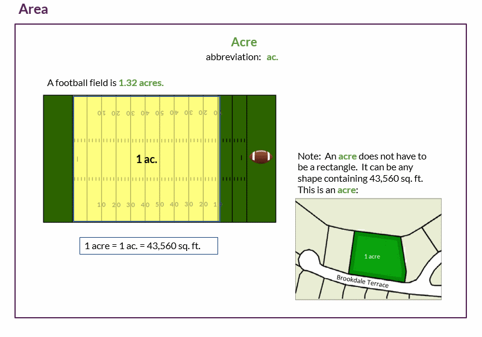

Units of measurement
1 of 8
Common units used in JUICE
2 of 8
Common units used in JUICE
3 of 8
Common units used in JUICE
4 of 8
Common units used in JUICE
5 of 8
Common units used in JUICE

6 of 8
Common units used in JUICE
7 of 8
Common units used in JUICE
8 of 8